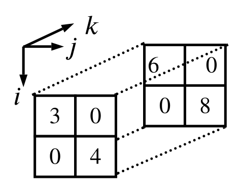

Tensors
Contents
2. Tensors¶
This chapter will define the notion of a tensor and develop the toolset needed for the study of tensor networks. We will start with a motivational section to explain the goal that is formulating a natural extension of Linear Algebra terms as vectors or linear maps. Then we will study operations on tensors that serve for their construction and modification. We have dedicated sections on tensor products, grouping and contraction. Next we will outline how tensors and multilinear maps are associated. We conclude this chapter with an overview of the basic tensor terms and their relations - this ought to serve as glossary for later chapters.
2.1. Motivation¶
A field \(\F\) can also be considered as a vector space (over \(\F\)). Indeed, the inner addition fulfills all axioms of vector space addition - and the inner multiplication fulfills all axioms of vector space scalar multiplication. An element \(a\in\F\) would then play the role of a vector. Furthermore it could also be seen as a linear map of \(\cL(\F)\) by \(x\mapsto a\cdot x\). Choosing the basis \(\{1\}\), we can express \(a\) with component \(a^1\def a\) and \([a^1]\) would denote the vector components or matrix for \(a\) seen as vector of likewise linear map.
Let \(V\) be (another) finite dimensional vector space over \(\F\). Let \(v\in V\) and \(v^i\) denote its components in basis \(\{e_1,\ldots,e_n\}\). Obviously, \(v\) is a vector, but can also be considered as linear map of \(\cL(V,\F)\) by \(x=\sum\limits_{i=1}^nx^ie_i\mapsto\sum\limits_{i=1}^nx^iv^i\). The transposed component vector \([v_1\ldots v_n]\) encodes the matrix representation of this linear map in bases \(\{e_1,\ldots,e_n\}\) and \(\{1\}\).
Consider a linear map \(T\in\cL(V,W)\) between finite dimensional vector spaces \(V\) and \(W\) over \(\F\). We know that the set of all such linear maps \(\cL(V,W)\) forms a vector space itself. Again, on one hand \(T\) can be seen as vector and on the other hand of course as linear map. Fixing bases \(\{e_1,\ldots,e_n\}\subseteq V\) and \(\{f_1,\ldots,f_m\}\subseteq W\) we obtain the matrix representation \([T^{ij}]_{i=1,j=1}^{n\;\;\;\;m}\) of the linear map \(T\). Likewise this would also serve as component description of \(T\) regarded as vector.
Summarizing, Linear Algebra knows different kinds of objects that behave linearly. We have:
Scalars \(a,b,\ldots\in\F\) can be seen as vectors as well as linear maps. Their components descriptions are again scalars (no index needed), which can be interpreted as 0-dimensional arrays.
Vectors \(v,w,\ldots\in V\) can be seen as vectors as well as linear maps. Their componts descriptions need one index and can be interpreted as 1-dimensional arrays.
Linear maps \(S,T,\ldots\in\cL(V,W)\) can be seen as vectors as well as linear maps. Their matrix representations need two indices and can be interpreted as 2-dimensional arrays.
The notion of a tensor will uniform these objects and generalize them into a framework that incorporates representations of arbitrary many indices. Linearity will be preserved, thus making tensors, being interpreted as vectors or as multilinear maps an expressive tool for e.g. Physicists. Furthermore, their components representations being interpreted as multidimensional arrays prove to be useful in Computer Science applications as Machine Learning.
2.2. Tensor Product¶
We will construct tensors out of tensors with less indices. So we can start with ordinary vectors and combine them to tensors. Those again being interpreted as vectors can then be used to construct tensors with even more indices. This construction rule will be given by the tensor product that combines vectors \(v\in V,\,w\in W\) in vector spaces \(V,W\) over the same field \(\F\) to a vector \(v\otimes w\) in a vector space \(V\otimes W\) over \(\F\). This product will be commutative, associative, distributive over vector addition and interchangable with scalar multiplication.
To motivate the upcoming definition we will have a closer look to distributivity over vector addition and interchangability with scalar multiplication. Together with the map \(\varphi:V\times W\rightarrow V\otimes W,\,\varphi(v,w)\def v\otimes w\) and \(a\in\F,\,v,v_1,v_2\in V,\,w,w_1,w_2\in W\) this implies the following equations.
We see, that both desired properties of the tensor product require the function \(\varphi\) to be linear in both arguments, i.e. being bilinear. This explains the following definition.
Definition 2.1 (Tensor Product)
Let \(V,W\) be vector spaces over a field \(\F\) with bases \(\{e_1,\ldots,e_n\}\subseteq V,\,\{f_1,\ldots,f_m\}\subseteq W\). For each combination of two basis elements \(e_i\in V,\,f_j\in W\) we define a symbol \(e_i\otimes f_j\). The set of all symbols \(\{e_i\otimes f_j:1\le i\le n,\,1\le j\le m\}\) forms a basis of the tensor product space \(V\otimes W\) and we define
The tensor product of two vectors is given by a bilinear embedding map \(\varphi:V\times W\rightarrow V\otimes W\) with
For \(v\in V\) and \(w\in W\) we define
If \(V\) and \(W\) are inner product spaces, \(V\otimes W\) is also an inner product space with
Directly from construction of \(V\otimes W\) (and its basis) we obtain the dimension of the tensor product space.
Observation 2.1 (Dimension of Tensor Product Space)
In general a tensor \(T\in V\otimes W\) can be expressed in chosen combined basis as
with \(T^{ij}\in\F\). The components can be interpreted as matrix \([T^{ij}]_{i=1,j=1}^{n\;\;\;\;m}\). Products of vectors from \(V\) and \(W\) are embedded into \(V\otimes W\) by means of \(\varphi\). The basis representation of \(v\otimes w\) for \(v=\sum\limits_{i=1}^nv^ie_i\in V\) and \(w=\sum\limits_{j=1}^mw^je_j\in W\) is (using bilinearity of \(\varphi\))
Seen from opposite direction, the tensor \(v\otimes w=\sum\limits_{i=1}^n\sum\limits_{j=1}^m(v\otimes w)^{ij}\,e_i\otimes f_j\) has a decomposition into \(v\) and \(w\) with
or written as matrix equation
Not all tensors from \(V\otimes W\) can be decomposed this way.
Example 2.1 (Tensor Product Decomposition)
We choose \(V\def W\def\R^2\), both with standard basis \(\{e_1\def [1\;\;0]^T,\,e_2\def [0\;\;1]^T\}\) and consider the tensors
Tensor \(S\) can be written as product \(S=(e_1+e_2)\otimes e_1\). This can be obtained by applying the distributive law (bilinearity of \(\varphi\)) and simply multiplying out. Another way would be to validate the respective matrix equation
We see also, that the product decomposition is not unique. Due to interchangability with scalar multiplication (bilinearity of \(\varphi\)), we can shift a scalar factor from one side to the other, e.g. \(S=2(e_1+e_2)\otimes 2^{-1}e_1\).
Tensor \(T\) can not be written as a tensor product of two vectors. The ansatz
yields \(v^1w^1=v^2w^2=1\), which demands that all components \(v^i\) and \(w^j\) are different from zero. But this contradicts \(v^1w^2=0\).
This means, the following definition is sensible.
Definition 2.2 (Entanglement)
A tensor \(T\in V\otimes W\) is called separable or unentangled, if vectors \(v\in V,\,w\in W\) exist, such that \(T=v\otimes w\). Otherwise \(T\) is called entangled.
The term entangled is motivated from Quantum Mechanics. We will leave it here with briefly mentioning the background. A system of several particle states, e.g. two electron spins, is modelled as tensor. The particle states behave correlatedly, exactly when this tensor cannot be decomposed into a tensor product of individual particle states.
In the beginning of this section we have stated, that the tensor product shall be commutative and associative. Obviously it is not commutative. E.g. in the setting of Example 2.1 we have to admit that
or as matrix equation
But there is a natural isomorphism between \(V\otimes W\) and \(W\otimes V\) given by this mapping of all basis elements:
This isomorphism swaps the indices of the tensor, i.e.
with \(T^{ij}=\tilde{T}^{ji}\). Hence, the tensors are essentially the same, apart from transposed coefficients matrices. Keeping in mind, that we actually have \(V\otimes W\simeq W\otimes V\), we will identify both tensor product spaces and make the tensor product commutative.
In a similar way we will identify \((V\otimes W)\otimes X\) with \(V\otimes (W\otimes X)\) by utilizing the isomorphism
with \(\{g_1,\ldots,g_p\}\) being a basis of \(X\). This leads to an associative tensor product. As common for associative products (which means that multiplication order does not matter), we can and will omit paranthesis completely and write e.g. \(V\otimes W\otimes X\).
We have succeeded in finding a way to combine vectors into tensors, such that the underlying product is commutative, associative, distributive over vector addition and interchangable with scalar multiplication. Since the tensor product space is a vector space itself, we can continue to further construct tensors with even more indices. An element of \(\R^2\otimes\R^2\otimes\R^2\) reads in general (using standard bases as given in Example 2.1)
The coefficients form a 3-dimensional array, e.g. the tensor
is represented by the following structure.
{kind=link}
Dual vector spaces play a prominent role in tensor products. Therefore they will be explicitly noted. The general tensor product space is of form
with all \(W_p\) being vector spaces over a field \(\F\), and all \(V^\ast_q\) being dual spaces over \(\F\) (to vector spaces \(V_q\) over \(\F\)).
Definition 2.3 (Contravariant, Covariant, Tensor Order)
The coefficients of a tensor \(T\in W_1\otimes\ldots\otimes W_r\otimes V^\ast_1\otimes\ldots\otimes V^\ast_s\) are identified by \(r+s\) indices.
We call indices belonging to vector spaces \(W_1,\ldots,W_r\) contravariant indices. Indices belonging to dual spaces \(V^\ast_1,\ldots,V^\ast_s\) are called covariant indices.
Contravariant indices will be written in superscript at coefficients and
in subscript at basis elements. Vice versa, covariant indices will be
written in subscript at coefficients and in superscript at basis elements.
Having bases \(\{f^{(p)}_1,\ldots,f^{(p)}_{m_p}\}\) of
\(W_p\) and bases \(\{e^{(q)1},\ldots,e^{(q)n_q}\}\) of
\(V^\ast_q\), we would write
A tensor with \(r\) contravariant and \(s\) covariant indices is called an order-\(\bold{(r,s)}\) tensor.
Let us come back to the standard objects of Linear Algebra. They smoothly fit into the general tensor language.
Vectors are order-\((1,0)\) tensors.
Dual vectors are order-\((0,1)\) tensors.
Linear maps are order-\((1,1)\) tensors. This will be explained in section Multilinear Maps.
Scalars are order-\((0,0)\) tensors. This is justified by the fact that a scalar does not require an index at all (although it might be indexed by a constant).
We conclude this section by turning our attention back to Definition 2.1 and showing that the definition of the inner product for basis elements extends naturally to all tensor products.
Observation 2.2 (Inner Product)
In the setting of Definition 2.1 we have for \(v_1,v_2\in V\) and \(w_1,w_2\in W\) the identity
Proof. With \( v_1=\sum\limits_{i=1}^nv_1^ie_i,\, v_2=\sum\limits_{p=1}^nv_2^pe_p,\, w_1=\sum\limits_{j=1}^mw_1^jf_j,\, w_2=\sum\limits_{q=1}^mw_2^qf_q \) we obtain
2.3. Grouping¶
Again, we take a look at the tensor
Using associativity, let us assume, that we resolve the right-hand side tensor product first, inducing the execution order \(\R^2\otimes(\R^2\otimes\R^2)\). Now, we will consider the outcome of this first tensor product as another vector space and rewrite the second tensor product be means of that space. We define
and relabel its basis elements by \( f_1\def e_1\otimes e_1,\, f_2\def e_1\otimes e_2,\, f_3\def e_2\otimes e_1,\, f_4\def e_2\otimes e_2 \). Then \(T\) reads
By doing so, we have reduced the amount of indices in the description of \(T\) by merging index 2 and 3. The representation has changed from (including a reshape of the coefficients data structure)
to
{kind=link}
In general we can treat an arbitrary large tensor product in this way. Since we consider the tensor product to be commutative, we can assume that the spaces to be merged (multiplied first) are all located at the end of the tensor product.
Definition 2.4 (Grouping)
Let
be a tensor. For \(W=V_{r+1}\otimes\ldots\otimes V_s,\,1\le r+1<s\) with basis \(\{f_1,\ldots,f_m\}\), we call the operaton of describing \(T\) as
grouping of the indices \(i_{r+1},\ldots,i_s\). If we do the opposite and expand a space of a tensor product into a product itself, we would call the change of description of a tensor ungrouping of the according index.
Note, that grouping/ungrouping changes the order of the tensor. Although being the same tensor, its order is dependent on the indices used to label its coefficients.
2.4. Contraction¶
For the following we need quite a useful symbol to express index equality.
Definition 2.5 (Kronecker Delta)
The Kronecker delta is a symbol with two indices. To be universally applicable, each index could be covariant (written subscript) or contravariant (written superscript). We have
Let \(V\) be a vector space over \(\F\) with basis \(\{e_1,\ldots,e_n\}\). Let \(V^\ast\) be its dual space, and \(\{e^1,\ldots,e^n\}\) the respective dual basis. We recall that the dual space \(V^\ast\) is in fact the space of all linear functionals on \(V\), i.e. \(V^\ast=\cL(V,\F)\). Furthermore, the link between basis elements and dual basis elements is the identity
Note, that all elements of \(V^\ast\) are in fact linear functionals and can be applied to elements of of \(V\). For tensors
the contraction of the indices \(i\) and \(j\) is the map
This term can be defined in general using the notions of Definition 2.3. A contraction will always contract a covariant index with a contravariant index. Due to commutativity we can assume without loss of generality, that the indices to be contracted are the first ones of each group (vector spaces or dual spaces, respectively).
Definition 2.6 (Contraction)
Let \(T\in W_1\otimes\ldots\otimes W_r\otimes V^\ast_1\otimes\ldots\otimes V^\ast_s\) be a tensor with
Let \(W_1=V_1\) be a matching vector space to dual space \(V^\ast_1\). Let \(\{f^{(1)}_1,\ldots,f^{(1)}_{m_1}\}\subseteq W_1\) be the dual basis of \(\{e^{(1)1},\ldots,e^{(1)n_1}\}\subseteq V^\ast_1\), obviously \(m_1=n_1\fed n\).
The contraction of the indices \(i_1\) and \(j_1\) is the function
with
The case \(r=s=1\) is already defined in equation (2.10).
This definition seems to be rather complicated. For a tensor
let us illustrate the contraction of the indices \(i\) and \(j\,\):
where
{kind=link}
The determination of a concrete example is straight forward.
Example 2.2 (Contraction)
We consider the tensor \(T\in\R^2\otimes\R^2\otimes\R^2\) (we recall \((\R^2)^\ast=\R^2\)), specified by
We calculate
{kind=link}
Since always a covariant index and a contravariant index will be contracted, an order-\((r,s)\) tensor will be turned into an order-\((r-1,s-1)\) tensor. Directly from definiton we obtain further results.
Observation 2.3 (Contraction Linearity)
The contraction is a linear function, i.e. for tensors \(T,T_1,T_2\) from a tensor space over \(\F\) and \(a\in\F\) we have
Proof. Both equations can be validated directly from Definition 2.6.
Observation 2.4 (Contraction Execution Order)
If we contract a tensor \(T\) twice, then the order of both contractions does not matter. We have for covariant indices \(i_1,i_2\) and contravariant indices \(j_1,j_2\) the identity
Proof. The assertion results from direct application of Definition 2.6.
Observation 2.5 (Contraction compatible with Tensor Product)
The contraction is interchangable with the tensor product. Let \(i\) be a covariant index of a tensor \(T_1\) and \(j\) be a contravariant index of \(T_1\). Contracting \(i\) and \(j\) can be executed before or after a tensor product with another tensor, the result is the same.
Proof. The equation is derived directly from definitions Definition 2.1 and Definition 2.6.
Contracting consecutively all indices of a tensor will always lead to a scalar result. The simplest case is the contraction of a matrix.
Example 2.3 (Matrix Contraction)
We recall equation (2.10), \(C_{i,j}:V\otimes V^*\longrightarrow\F,\,C_{i,j}(T) = \sum\limits_{k=1}^nT^k_k\,\). Considering the coefficients of \(T\) as matrix, we obtain
2.5. Multilinear Maps¶
Having introduced the main tensor operations - tensor product, grouping, contraction - we are able to generalize more building blocks of Linear Algebra. We start with linear maps. Let \(V,W\) be vector spaces, let \(\{e_1,\ldots,e_n\}\) be a basis of \(V\) and let \(\{f_1,\ldots,f_m\}\) be a basis of \(W\). We recall, how the matrix representation of a linear map \(S\in\cL(V,W)\) is derived. For \(v=\sum\limits_{i=1}^nv^ie_i\in V\) and \(S(e_i)=\sum\limits_{j=1}^mS^j_if_j\in W\) we compute
Let \(V^\ast\) be the dual space of \(V\), and let \(\{e^1,\ldots,e^n\}\) be the dual basis. Let \(T=\sum\limits_{j=1}^m\sum\limits_{i=1}^nT^j_i\,f_j\otimes e^i\in W\otimes V^\ast\) be a tensor. For \(v=\sum\limits_{k=1}^nv^ke_k\in V\) we define a map \(T':V\rightarrow W\) by
We recall bilinearity of the tensor product (Definition 2.1) and linearity of the contraction (Observation 2.3). Together both imply that \(T'\) is linear as well, i.e. \(T'\in\cL(V,W)\). Its matrix representation can be obtained by resolving the contraction.
Comparing equations (2.11) and (2.13) we obtain that the coefficients \(T^j_i\) of tensor \(T\) form the matrix representation of the linear map \(T'\). This twofold interpretation of \(T^j_i\) as tensor coefficients and matrix of a linear map provides the natural isomorphism \(W\otimes V^\ast\simeq\cL(V,W)\). Nevertheless, to be precise during theory development, we will continue to differentiate linear map and related tensor by adding a prime to the character denoting the map. Later we will abandon this distinction. After having discussed the case of a expressing a linear map with a tensor, we will take this approach even further and lift it to multilinear maps.
Theorem 2.1 (Tensors are Multilinear Maps)
Let \(V_1,\ldots,V_s\) be vector spaces with bases \(\{e^{(i)}_1,\ldots,e^{(i)}_{n_i}\}\) and respective dual bases \(\{e^{(i)1},\ldots,e^{(i)n_i}\}\). In addition let \(W\) be a vector space with basis \(\{f_1,\ldots,f_m\}.\) Let
be a tensor of \(W\otimes V^\ast_1\otimes\ldots\otimes V^\ast_s\). Then we can define a multilinear map \(T'\in\cL^s(V_1,\ldots,V_s \, ; \, W)\) as follows. For \(v_p=\sum\limits_{k_p=1}^{n_p}v_p^{k_p}e^{(p)}_{k_p}\in V_p\) we set
The way tensor \(T\) is used to define \(T'\) provides an isomorphism
Proof. We content ourselves with giving a sketch of a proof. The argument follows the same path as already explained for the case \(s=1\). Bilinearity of the tensor product ensures that
is linear in each variable. Linearity of contractions preserves that. Hence \(T'\) is linear in each variable and therefore
Calculating
yields \(T^j_{i_1\ldots i_s}v_1^{i_1}\cdots v_s^{i_s}\) as coefficients. If one strips down a multilinear map \(S\in\cL^s(V_1,\ldots,V_s \, ; \, W)\) to its effects on basis elements - in a similar way linear maps are expressed by means of their matrix representation - then one obtains the same coefficients \(S^j_{i_1\ldots i_s}v_1^{i_1}\cdots v_s^{i_s}\). This delivers an isomorphism for
We will give a few examples to illustrate how a linear transformation can be realized by a tensor.
Example 2.4 (Hadamard Transformation)
Let
be the Hadamard matrix of order 2. Let \(H'\) be the associated linear map of \(\cL(\R^2)\) - with basis of \(\R^2\) being the standard basis \(\{e_1\def [1\;\;0]^T,\,e_2\def [0\;\;1]^T\}\) for domain space as well as for image space. It is folklore to obtain the image of \(v=ae_1+be_2\) by feeding \([a\;\;b]^T\) into
to obtain \(H'(v)=(a+b)e_1+(a-b)e_2\).
We want to do the same exercise using \(H\) as tensor. We can rephrase \(H\) (using the same coefficients) as
Let \(i\) be the covariant index of \(H\) and \(k\) be the index of the argument \(v\). We can express application of \(H'\) as
This might appear clumsy on first sight. But this approach will later turn out to be very powerful, especially when the linear map is interacting between tensor product spaces.
Example 2.5 (Identity Map)
The identity map \(I'\in\cL(\R^2)\) can be realized by tensor
Although this is true regardless of the chosen basis, \(\{e_1,e_2\}\) shall still denote the standard basis. To validate that linear maps match, it is sufficient to check all basis arguments. So, let us outline where the \(I\) induced map sends \(e_1\) and \(e_2\).
Indeed, this is the identity.
Example 2.6 (NOT Gate)
The Hadamard transformation (and the identity of course as well) will play a prominent role in the later Quantum Computing elaboration. The NOT gate is another building block. A quantum bit (qubit) holds state values of \(\C^2\). For the sake of simplicity we will stick to \(\R^2\) here. Again, let \(\{e_1,e_2\}\) be the standard basis. \(e_1\) plays the role of logical false, \(e_2\) features logical true. A linear combindation of both reflects the qubit being in superposition.
The NOT gate \(X'\) negates the logical values \(e_1\) and \(e_2\), i.e.
Compared to the identity map, we have to cross-wire \(e_1\) with \(e^2\) and vice versa. The tensor realizing \(X'\) is
Indeed, we can verify
We succeeded in expressing any linear transformation between vector spaces as a contraction of a tensor product. How does this apply to chaining of linear transformations? Let \(T'\in\cL(V,W)\) and \(S'\in\cL(W,X)\). We have learned that both linear functions can also be constructed with tensors having same coefficients (as the matrix representations) in same bases. Let
denote these tensors. Take notice of \(\{g_1,\ldots,g_r\}\) being basis of \(X\), all other already introduced notations remain - same basis characters with superscript and subscript indices form dual bases.
Theorem 2.2 (Function Composition)
Composition of linear maps can be expressed by contraction and tensor product. The tensor associated to the map \(S'\circ T'\in\cL(V,X)\) is
For \(v=\sum\limits_{k=1}^nv^ke_k\in V\) the map is realized by
Proof. Using Observation 2.4, Observation 2.5 and Theorem 2.1 we can transform
The possibility to define linear maps with help of tensors will help us now to extend linear maps to tensor product spaces. Let \(T'\in\cL(V,W)\) and \(S'\in\cL(X,Y)\). In addition to notations already in use, let \(\{h_1,\ldots,h_s\}\) denote a basis of \(Y\). Let \(T\) and \(S\) be the tensors realizing \(T'\) and \(S'\). Then for \(v=\sum\limits_{k=1}^nv^ke_k\in V\) and \(x=\sum\limits_{l=1}^rx^lg_l\in X\), we have
We are going to combine \(T'\) and \(S'\) in a natural way to obtain a linear map \(T'\odot S'\in\cL(V\otimes X,W\otimes Y)\). We will do this with help of
One strategy to define \(T'\odot S'\) would be to group indices \(i,p\) and \(j,q\) in \(T\otimes S\) and then follow Theorem 2.1. However, this would require to justify that \(V^\ast\otimes X^\ast\) (part of definition of \(T\otimes S\)) can be identified with \((V\otimes X)^\ast\) (necessary to define the linear map). We will deviate from this strategy and use the fact that the tensor is given as tensor product. We will use \(T\) and \(S\) separately to define the map for arguments from \(V\otimes X\) that are separable. Afterwards we will continue the function linearly to all possible arguments.
Lemma 2.1 (Tensor Product of Linear Maps)
We define \(T'\odot S':V\otimes X\rightarrow W\otimes Y\) by
Then \(T'\odot S'\) is well-defined and \(T'\odot S'\in\cL(V\otimes X,W\otimes Y)\). Furthermore, for \(v\otimes x\in V\otimes X\) holds
Proof. We start with the case that \(u\) is separable, \(u=v\otimes x\). Linearity follows again from linearity of tensor product and contraction. We calculate (using Observation 2.5)
Now consider the case that \(u\) is entangled. The basis representation
is unique. Hence,
is well-defined. It is also compatible with separable arguments (the function value would be the same also when fed into the second line of the function definition) and linear. Since the function value is a linear combination of already defined values, it stays in \(W\otimes Y\). All in all, \(T'\odot S'\) is a well defined linear map fulfilling \(T'\odot S'\in\cL(V\otimes X,W\otimes Y)\).
The coefficients of \(T\otimes S\) are \(T^j_iS^q_p\) (confer equation (2.14)). \(T^j_i\) also represents the matrix of \(T'\) (in same bases), \(S^q_p\) represents the matrix of \(S'\). This means, if we interpret \(T'\) and \(S'\) as vectors of vector spaces \(\cL(V,W)\) and \(\cL(X,Y)\) respectively. Then \(T^j_i,\,S^q_p\) would be their coefficients. Hence, \(T^j_iS^q_p\) would be the coefficients of \(T'\otimes S'\in\cL(V,W)\otimes\cL(X,Y)\). This justifies to use \(T'\otimes S'=T'\odot S'\) when referring to the composed linear map. Using this notation we express the results of Lemma 2.1 entirely by means of \(T'\) and \(S'\).
Theorem 2.3 (Tensor Product of Linear Maps)
Let \(T'\in\cL(V,W),\,S'\in\cL(X,Y)\). Let \(T'\otimes S'\in\cL(V\otimes X,W\otimes Y)\) be defined as mentioned before.
If \(u\in V\otimes X\) is separable, i.e. \(u=v\otimes x\), then
For all (other) arguments the function value of \( u=\sum\limits_{k=1}^n\sum\limits_{l=1}^ru^{kl} \, e_k\otimes g_l\in V\otimes W \) is obtained from
Note, that this theorem (and the lemma before) makes heavy use of the fact, that the effect of the linear map on \(V\otimes X\) can be broken down to local transformations acting solely on \(V\) or on \(X\). Not all linear maps in \(\cL(V\otimes W,X\otimes Y)\) are decompossible this way. This is the case if and only if the linear map - considered as tensor - is separable. We will see a separable as well as an entangled linear map in the following examples. From now on, we will abandon the strict distinction between multilinear map and generating tensor. We will treat them as synonyms now and let them share the same character as identifier.
Example 2.7 (Hadamard Gate)
Based on Example 2.4 we will extend the Hadamard transformation \(H\) into a quantum gate acting on two qubits. A two-qubit system is a state space in \(\C^2\otimes\C^2\). We will continue to simplify and let the Hadamard gate act on \(\R^2\otimes\R^2\), where \(\R^2\) is equipped with standard basis \(\{e_1,e_2\}\). We will also neglect the fact that quantum states are actually vectors of norm \(1\), which would enforce the Hadamard transformation to contain a scaling factor of \(1/\sqrt{2}\).
We require the quantum gate to act on the first qubit as Hadamard transformation and to leave the second qubit unchanged. Theorem 2.3 shows how we can combine these separate actions on single qubits into a combined action on the two-qubit system - by merging them by tensor product. The combined quantum gate is
Quantum circuits are usually initialized by setting all qubits to logical false. In our example that would be \(e_1\otimes e_1\). We will calculate the result of applying the just constructed quantum gate to this configuration:
Example 2.8 (CNOT Gate)
The CNOT gate is also acting on two qubits. CNOT stands for Controlled NOT. Qubit one is the control bit, qubit two the target bit. The control bit remains unchanged but will decide how the target bit will be manipulated. If the contol bit is set to \(e_1\), the target bit will not be changed (modified by identity \(I\)). If the contol bit is set to \(e_2\), the target bit will be inverted (modified by NOT gate \(X\)). The CNOT gate \(CX\) is implemented by
To analyze how this works, we will inspect both summands. We need to name indices. Let \(i\) be the covariant index of \(CX\) that belongs to the control bit and let \(p\) be the covariant index of \(CX\) that belongs to the target bit. For the arguments (qubits) we denote the control bit index by \(k\) and the target bit index by \(l\). We will distinguish both control bit cases \(e_1\) and \(e_2\), the argument of target bit is denoted by \(v\).
yield
and
yield
We want to process the outcome of the previous example. We compute
Referring to Example 2.1, we have shown by example, that CNOT maps an unentangled argument to an entangled image. Hence, CNOT can not be expressed by a separable tensor. Otherwise Theorem 2.3 would ensure that every unentangled argument yields an unentangled image.
Most sources on Quantum Computing give the CNOT gate as a \(4\times 4\)-matrix, e.g. (depending on index order),
whereas in our definition the CNOT gate belongs to \((\R^2\otimes\R^2)\otimes(\R^2\otimes\R^2)\,.\) How does this fit together?
Interpreting the tensor as linear map, as we have done, it is an element of \(\cL(\R^2\otimes\R^2,\R^2\otimes\R^2)\), modifying the (possibly entangled) value of two qubits. In terms of coefficients this linear map is represented by a 4-dimensional array (\(2\times 2\times 2\times 2\)) and is mapping a \(2\times 2\)-matrix to a \(2\times 2\)-matrix. But, grouping both covariant indices (inputs of control and target bit) and both contravariant indices (outputs of control and target bit) of the tensor, it stands for a linear map of \(\cL(\R^4,\R^4)\). We enumerate the basis or \(\R^4\simeq\R^2\otimes\R^2\) in the order (control bit left, target bit right) \(e_1\otimes e_1,\,e_1\otimes e_2,\,e_2\otimes e_1,\,e_2\otimes e_2\). Evaluating the effect of \(CX\) to these basis elements,
we obtain indeed \(M\) as matrix representation of \(CX\).
Example 2.9 (Entanglement Circuit)
A quantum circuit is a sequence of quantum gates. We construct one out of the previous two examples and chain an Hadamard gate and a CNOT gate:
This represents a simple quantum circuit for obtaining an entangled state out of all-falsy initial configuration.
2.6. Tensor Cheat Sheet¶
We want to reflect and summarize the discoveries of this chapter. We had started with the motivation to bring elements of Linear Algebra into a general framework. In good old Computer Science tradition its building blocks are objects and operations on these objects. There is only one type of object, the tensor, which can act as vector, dual vector or linear map depending on the context. There are two major operations, the tensor product and the contraction. The tensor product is used to combine tensors to bigger ones, e.g. a linear map can be built out of the tensor product of a vector and a dual vector. The contraction, however, reduces the size (order) of a tensor by summing along a covariant index and associated contravariant index. It generalizes the matrix-vector-product. Together tensor product and contraction can be used to mimic the application of a linear map to a vector, or to express the composition of linear maps. In addition, as we have pointed out, tensors do not only allow to express concepts of Linear Algebra in a consistent way, they even add multilinearity to those concepts.
Vector
Dual Vector
Tensor Product
Linear Map
Dual Map
Composed Linear Map
Bilinear Map
Multilinear Map
Tensor Product of Linear Maps